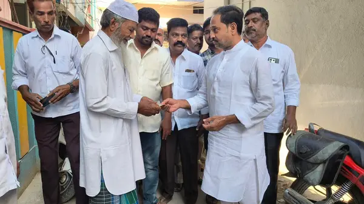
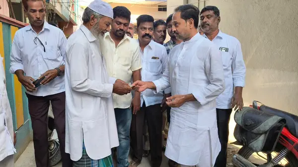
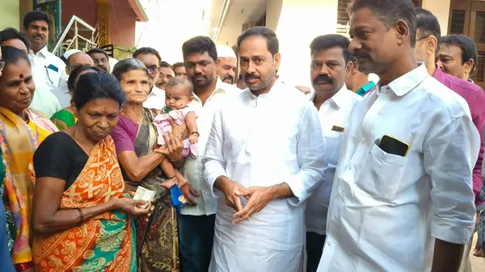

1 March
ఎన్టీఆర్ భరోసా: కదిరిలో ఇంటింటికీ పింఛన్లు
కదిరి నియోజకవర్గంలో ఎన్టీఆర్ భరోసా సామాజిక పింఛన్ల పంపిణీ కార్యక్రమం విజయవంతంగా కొనసాగుతోంది. కదిరి మున్సిపాలిటీలోని 29, 30 వార్డుల్లో కదిరి ఎంఎల్ఏ గౌ శ్రీ కందికుంట వెంకట ప్రసాద్ గారు లబ్ధిదారుల ఇంటికే నేరుగా వెళ్లి పింఛన్లు అందజేశారు.
ఈ కార్యక్రమంలో కదిరి శాసనసభ్యులు గౌ. శ్రీ కందికుంట వెంకటప్రసాద్, కదిరి పట్టణ అధ్యక్షులు డైమండ్ ఇర్ఫాన్, టీడీపీ నాయకులు మేకల రమణ, మున్సిపల్ కమిషనర్, సచివాలయ సిబ్బంది, టీడీపీ నాయకులు, కార్యకర్తలు పాల్గొన్నారు.
ప్రజలకు చేరువగా పాలనఎన్టీఆర్ భరోసా పథకం ద్వారా వృద్ధులు, వితంతువులు, వికలాంగులు, ఇతర అర్హులైన లబ్ధిదారులకు ప్రతి నెలా పింఛన్లు అందజేస్తున్నారు. ఈ పథకం ద్వారా పేద ప్రజలకు ఆర్థిక భరోసా కల్పించడమే ప్రభుత్వ లక్ష్యం. లబ్ధిదారుల ఇంటికే నేరుగా వెళ్లి పింఛన్లు అందజేయడం ద్వారా వారికి సమయం, శ్రమ ఆదా అవుతున్నాయి. అంతేకాకుండా, ప్రభుత్వ పథకాలు ప్రజలకు చేరువవుతున్నాయి.
ఎన్డీఏ ప్రభుత్వం, సంక్షేమ పథకాలు
ఎన్డీఏ ప్రభుత్వం పేద ప్రజల సంక్షేమానికి పెద్దపీట వేస్తోంది. ఎన్టీఆర్ భరోసా వంటి పథకాల ద్వారా పేదలకు ఆర్థిక భరోసా కల్పిస్తోంది. ప్రభుత్వ పథకాల అమలులో పారదర్శకత, జవాబుదారీతనం ఉండేలా చర్యలు తీసుకుంటోంది. కదిరిలో సంక్షేమ పాలన
కదిరి నియోజకవర్గంలో ఎన్టీఆర్ భరోసా పథకం విజయవంతంగా అమలవుతోంది. అర్హులైన ప్రతి ఒక్కరికీ పింఛన్లు అందేలా చూస్తున్నారు. ప్రజల సమస్యలను తెలుసుకుని వాటిని పరిష్కరించడానికి కృషి చేస్తున్నారు. కదిరిలో సంక్షేమ పాలన కొనసాగుతోంది.